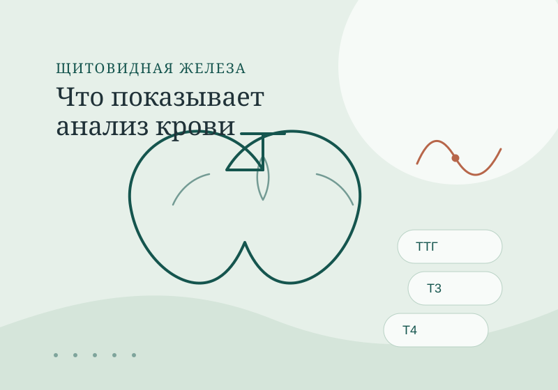
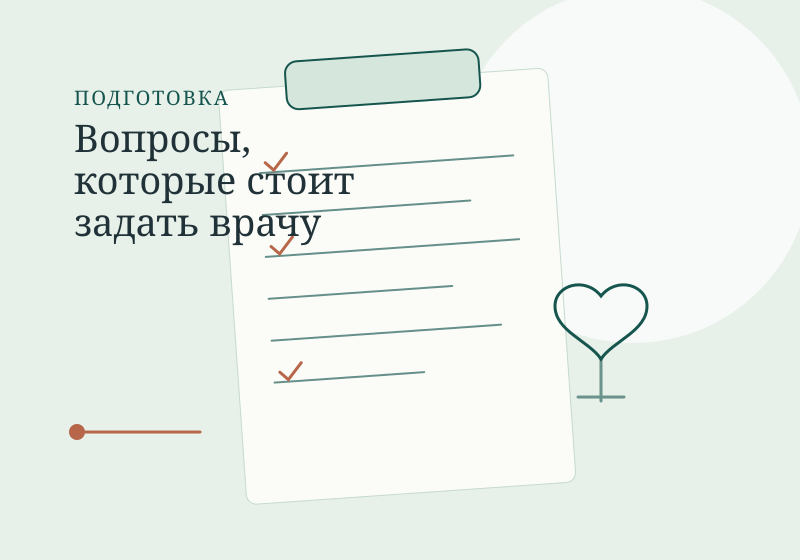

Щитовидная железа
Повышен ТТГ: что может означать результат анализа?
Почему один показатель не ставят диагноз и какие данные важны для обсуждения с врачом.
Полезные материалы
Справочные материалы о щитовидной железе, обмене веществ и подготовке к консультации. Они не заменяют приём врача, но помогают сформулировать вопросы и лучше понять контекст.

Щитовидная железа
Почему один показатель не ставят диагноз и какие данные важны для обсуждения с врачом.

Обмен веществ
Что означает чувствительность к инсулину и почему её оценивают в клиническом контексте.

Подготовка
Короткий список, который помогает не забыть важное и использовать время консультации.
Раздел будет пополняться. Все медицинские материалы проходят редактуру и содержат дату актуализации. Если вам нужен разбор вашей ситуации, запишитесь на консультацию — статья не заменяет индивидуальную медицинскую помощь.